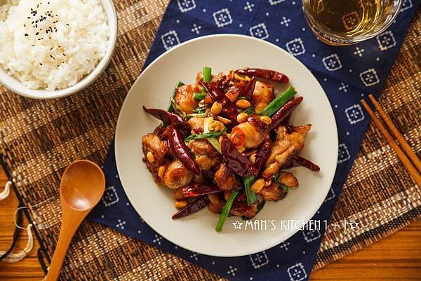
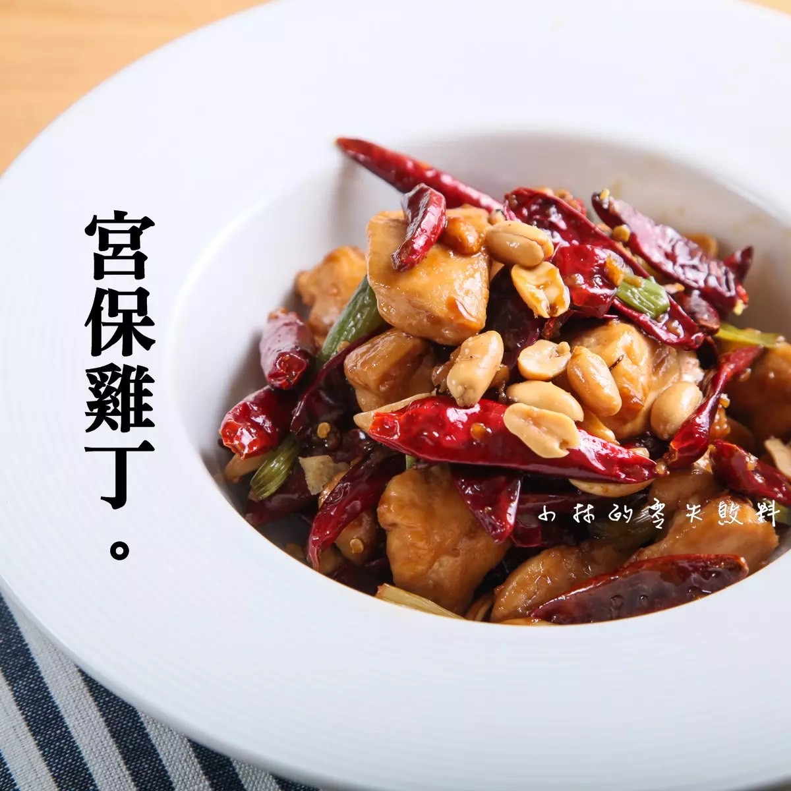
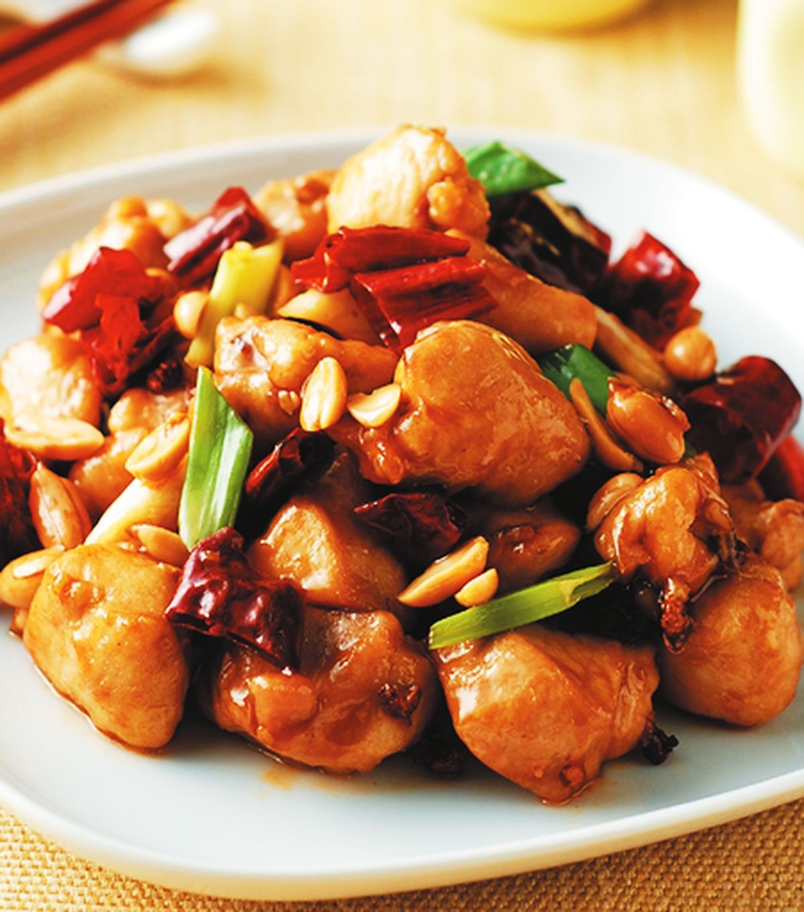

起油鍋，將雞肉下鍋炒至約7分熟後起鍋備用。
利用同一油鍋，將蔥白、薑、蒜下鍋爆香。接著將乾辣椒與雞肉下鍋炒熟
最後起鍋前再加入蔥綠、麻辣花生和適量的鹽與糖調味即可。
  
番茄炒蛋介紹 火腿玉米蛋炒飯介紹 糖醋排骨介紹 心得
練習 影片 音樂
Your browser does not support the audio element. Your browser does not support the video tag.